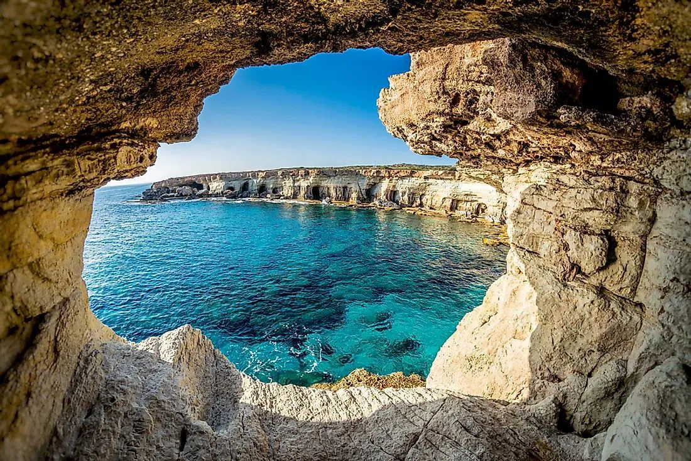
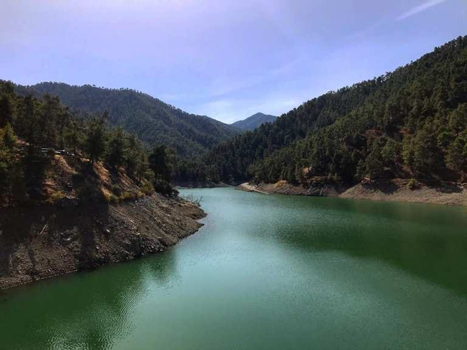
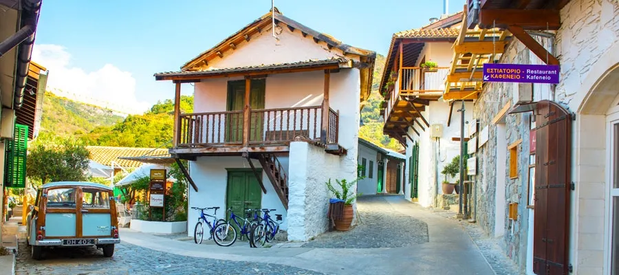
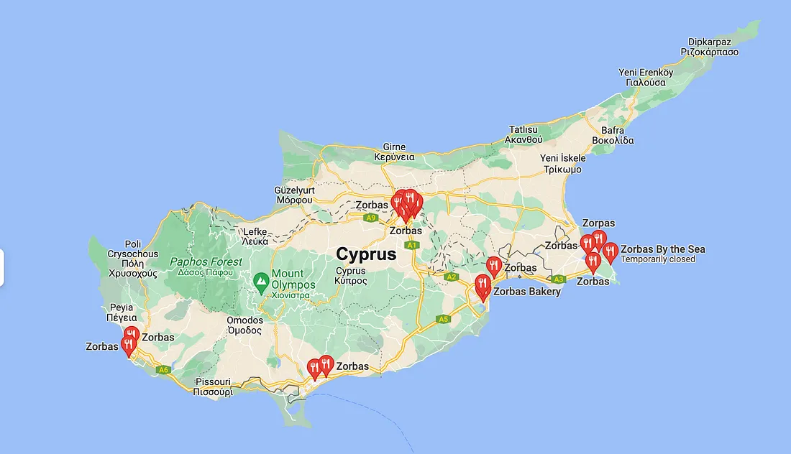

Experience Cyprus Like a Local!
The article provides recommendations for activities, transportation, beaches, nature, villages, and food to help tourists experience Cyprus like a local.
Most viewed video about Cyprus 👈
Are you planning a trip to the island of goddess Aphrodite? From beautiful beaches to majestic mountains, Cyprus is a place where you can do a wide variety of activities. In this article, you will find details such as currency, transportation, restaurant recommendations, cultural visits, and cool activities you can do. Cyprus is sunny more than 300 days a year, however, remember to check the weather before arriving.
CURRENCY
The main currency is Euro. Live currency converter. They accept card payments everywhere. If you have a foreign currency, with Revolut you should be fine. Keep in mind that the north of the island (37%) is occupied by Turkey since 1974, therefore, Turkish Lira is what was adopted and is still in use in that part of the island.
TRANSPORTATION
The most efficient way to transport in Cyprus as a tourist would be to rent a car. This offers the flexibility to explore the island at your own pace, and reach remote destinations that may not be accessible by public transportation. Remember, people left-hand side of the road, like in the UK. It is recommended to book your rental car in advance, especially during peak tourist season, to ensure availability and secure a better rate.
Taxis and buses are also options; While you might not be as flexible as with a car, buses at least can be cheaper — routes and schedules.
BEACH
There are different kinds of beaches in Cyprus. The most popular among Cypriots are in Protaras and Ayia Napa area. Here are some options for you:
Marcelo (wavy with some rocks. More popular for students).
Fig tree bay (sand only, with a more shallow surface. More popular for families).
Yianna Marie Beach (This is something hybrid between the two prementioned beaches and one of the top preferences of locals. Here there is sand, not wavy with occasional rocks.)
For nice scenery, you can visit Cape Greco, where you can see sea caves. There are also people that are swimming in the crystal clear waters there, and some risk-loving people that dive from the Cape Greco cliff in the sea (not recommended).

NATURE
For greenery and nature, you can go to Troodos National Forest Park around Mount Olympus. It is an area of outstanding natural beauty, suitable for activities such as hiking, winter skiing, biking, nature study, camping, and picnics. The highest point is Chionistra (1,952 m) and the lowest is Moni forest (700m).

Beautiful Villages to visit:
Kalopanagiotis (It is known as the ornament of Marathasa Valley, a village that kept its old character while it evolved. With an old Unesco heritage church from the Venetian era, walking trails in the forest, and restaurants around, it attracts thousands of visitors every year. A lot of locals go there to relax, especially during summer.) Omodos (Beautiful village with traditional scenery and a war museum) Agros (A cultural village. It is reknown for its Rose Factory, its infamous traditional sweets store “ta Glyka tis Nikis”, and the traditional Cyprus sausage that is produced there.)

ACTIVITIES
🚲 Biking Nicosia’s Cycling route park, Pedieos linear park. It goes from Anthoupoli (Nicosia suburb) to downtown. Arguably, one of the most underrated experiences, it is a 14km(8.6 miles) ride with a lot of greenery, city nature, runners, and cats. You can also walk here on its pedestrian side.
 👈
👈
🎳 Bowling at Kykko Bowling. It is the only bowling place in Nicosia. With $6/game you can have fun while showing off your talent.
⚽ Football. If you are five people, you can call in advance one of the following football futsal fields and they will find you opponents to play against; Paeeek, THOI (those are two good places I know; located in Nicosia).
🔫 Paintball. While it is more expensive than the rest of the activities ($25/person) is a fun group activity — min 8 people.
💻 Remote working / Reading. Yfantourgeio is a great place to work remotely from. It is a quiet co-working space and in the heart of Nicosia. Another quiet place you can go is the library of the University of Cyprus. Moreover, you can go to one of the multiple coffee shops in Cyprus Nero, Costa Coffee, and Gloria Jeans (less quiet but more social).
FOOD min $ /max $$$$
🥖 Zorbas $ The most famous bakery in Cyprus where any local goes to. They are even operating in New York. For a quick breakfast, a sweet, or a traditional cooked meal for lunch or dinner, this is your go-to place. They have many locations in different cities in Cyprus.

🍖 ETHA Egkomis $$ Traditional Cypriot food. Highly recommended.
🍖 Zannetos $$ Traditional Cypriot food. Best place for meze.
🍖 Piatsa Gourounaki $ Traditional Cypriot food; fast food that it is conveniently located downtown.
🍖 To anamma $ Traditional Cypriot food. Fast food traditional food also downtown. Has a beautiful inside sitting area.
🍔 The Garrison Bar $$ Burger bar with a Peaky Blinders theme and menu.
🍔 Babylon Bar $$ A local bar with a billiard and nice atmosphere.
🍔 Moondogs Bar $$ A local sports bar with billiard and a nice atmosphere.
🍱 China Spice $$$ Chinese restaurant. Great place for dinner, good value for money for its fanciness, with a variety of dishes. My favorite Chinese in Cyprus, especially on Tuesdays, there is an all-you-can-eat buffet for $25/person.
🍕 Alfa Pizza $ Cypriot fast food pizza chain.
🥙 Avo $ If you are a backpacker this is your place. It is the cheapest place you can get food in Nicosia. While you can get all sorts of food from souvlaki to pizza, Armenian food and lahmacun is their specialty.
🥞 Edem’s Yard $$ Breakfast/brunch in Larnaca’s palm trees area.
🥞 Hari’s Creperie Special crepe and waffle combinations in good prices. Check it out.
🍦 Papafilippou Ice-Cream $ The most famous local ice-cream. Enjoy your ice cream while playing arcade games. You can find other Papafilipou branches in Cyprus, and you can also find Papafilipou ice-cream in grocery stores and any kiosk.
🍦 Heraclis Ice-Cream $ The oldest ice-cream shop in Cyprus. It opened in 1939, from a local man named Heraclis during the British occupation before Cyprus become independent.
Hopefully, this article helps you make a memorable and satisfactory Cyprus experience. Please clap 👏 on medium if you find this post helpful:)